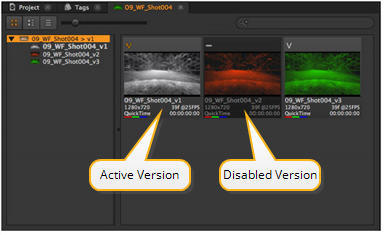
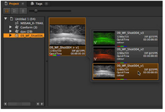

版本在垃圾箱和序列中的行为相似，在这两种情况下，你首先必须摄入现有的版本。
摄取并定位版本剪辑，然后:
| 1。 | 右键单击并选择 版本 > 扫描版本 搜索可用版本。 |
对话框允许您知道发现了多少版本。
| 2. | 使用右键单击 版本 菜单到: |
• 转到下一个 版本向上 或 版本下降 .
• 转到 最低 或 最大版本 .
提示: 您也可以使用 Alt 向上 / 向下箭头 键盘快捷键增加版本或 Alt 转变 向上 / 向下箭头 达到最大值或最小值。
当您到达发现的版本的末尾时，增加版本会自动扫描可能已可用的新版本。
| 3. | 仅对于源剪辑，可以在剪辑上单击鼠标右键，然后选择 打开 > 版本 Bin 显示目标剪辑的所有发现版本。 |
版本控制约定可能允许剪辑到您没有预料到的版本 Bin 中。您可以通过选择版本并按 D 或通过选择 设置活动版本 使用鼠标右键单击剪辑 版本 菜单。
的 活动版本 是将源剪辑拖到时间线时显示的版本，用橙色表示 V 在左上角的缩略图。

| 4. | 对所有可用版本进行排序后，在 bin 视图中选择一个剪辑，然后按 V 在方便的窗口中显示该剪辑的所有版本。 |

| 5. | 选择所需的剪辑以设置 活动版本 并将其应用于剪辑。 |
|
|